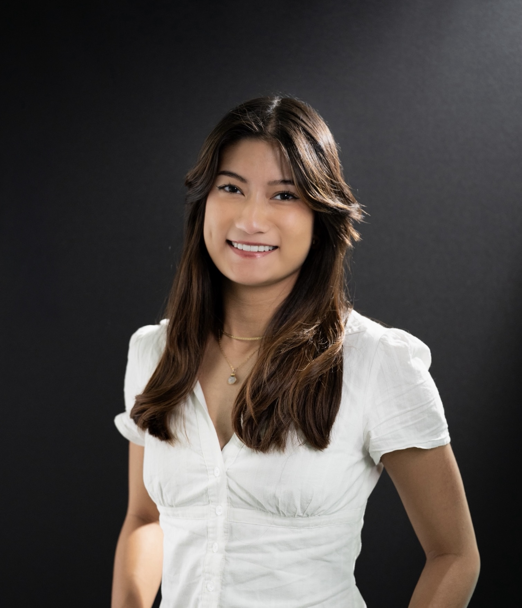
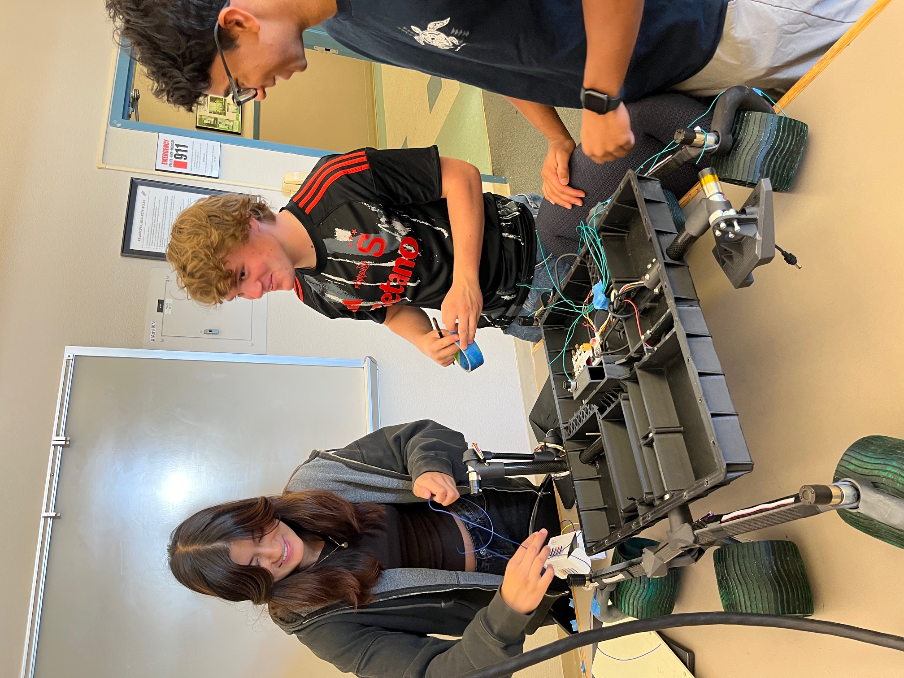
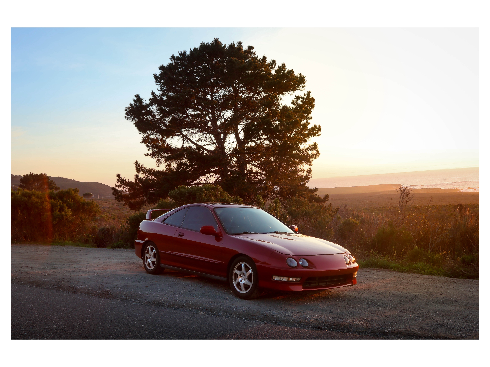
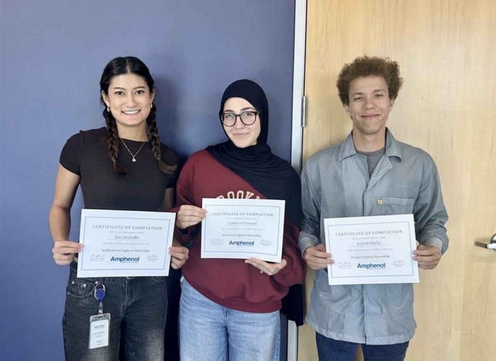
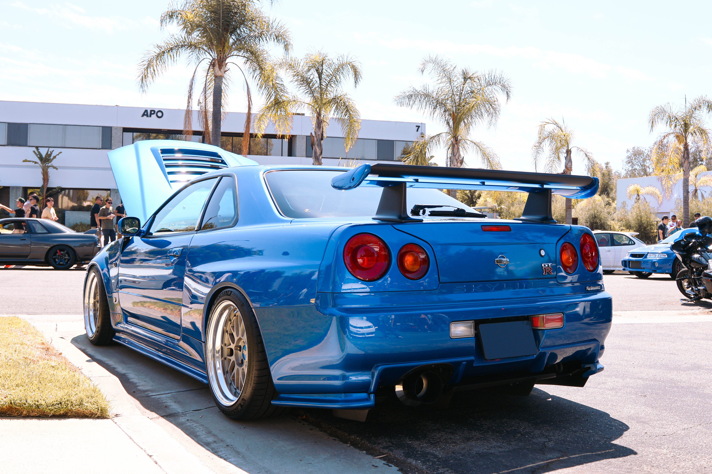

Cal Poly SLO Electrical Engineering Student
I am an electrical engineering student at Cal Poly SLO, interested in power electronics, aerospace, and hardware systems such as wiring, PCB design, and space technologies. I bring a strong blend of technical problem-solving and service-oriented experience developed through three years of volunteer work with the Irvine Police Department, where I learned to remain adaptable and quick-thinking in fast-paced, unpredictable situations. In addition, I pursue photography with a focus on sports and automotive subjects, while also taking on paid and freelance projects such as graduations and environmental portraits. This work has deepened my creativity, attention to detail, and adaptability to various client needs.

SYSTEM INDEX // TOTAL UNITS: 8

Led the wire harnessing team for a fully student-designed rover, engineering the 2025 harness architecture for sensors, motors, and power systems.

Designed and fabricated a compact 4-bit Weighted Resistor DAC, converting digital signals to analog audio, validated on oscilloscope and Arduino.

Built a full slot machine game on a Basys 3 FPGA using SystemVerilog, integrating a custom FSM, comparator, and win detection logic.

Designed and implemented an autonomous RC vehicle at UC San Diego's COSMOS program using the DonkeyCar AI Framework, behavior cloning, and OpenCV, achieving fully autonomous lane-following.

Designed and assembled the front wire harness for Cal Poly Racing's Formula SAE vehicle in Siemens NX and Rapid Harness, refining routing and connector integration for reliability.

Ongoing build and restoration of a 1998 Acura Integra, covering mechanical work, electrical troubleshooting, and cosmetic upgrades.

Designed and manufactured two custom fixtures in SolidWorks via resin 3D printing to improve wire alignment during aerospace harness backshell assembly.

Authored SolidWorks harness and kit drawings standardizing heater cartridge assembly, molding, and silicone potting to EN1556 spec across five production sites.
Assembled and electrically tested 14 aerospace prototype wire harnesses by performing wire stripping, crimping, connector pinning, continuity testing, pull-force testing, and contact retention verification.
Performed electrical validation using oscilloscopes, function generators, and shorted-stub test fixtures while developing standardized electrical test procedures.
Designed two custom fixtures in SolidWorks and manufactured them via resin 3D printing to improve wire alignment during backshell assembly and silicone potting.
Authored four SolidWorks harness and kit drawings that standardized heater cartridge assembly, molding, and potting processes, driving consistent manufacturing work instructions across five production sites.
Technical Skills Personable Skills
Provide paid and freelance photography services with a focus on sports and automotive subjects, alongside client-based work including graduations and environmental portraits.
Manage every stage of a shoot from client communication and location scouting to shooting and post-production editing, adapting style and approach to each client's needs.
Technical Skills Personable Skills
Delivered fast, friendly customer service in a high-volume, fast-paced restaurant environment, handling orders, food preparation, and front-of-house operations.
Worked closely with a large team under time pressure, staying organized and adaptable during peak rush periods while maintaining accuracy and a positive customer experience.
Technical Skills Personable Skills
Volunteered for three years with the Irvine Police Department's Explorer program, assisting officers with community events, department operations, and public safety initiatives.
Developed the ability to remain adaptable and quick-thinking in fast-paced, unpredictable situations, while building strong discipline, communication, and teamwork skills within a structured, service-oriented environment.
Technical Skills Personable Skills
I designed and fabricated a compact 4-bit Weighted Resistor DAC PCB using LTspice for simulation and EAGLE for layout. The board successfully converted digital signals to analog audio, validated through oscilloscope testing and Arduino integration. This project reinforced my skills in circuit design, PCB assembly, and mixed-signal analysis, while demonstrating a sustainable, low-power hardware solution.